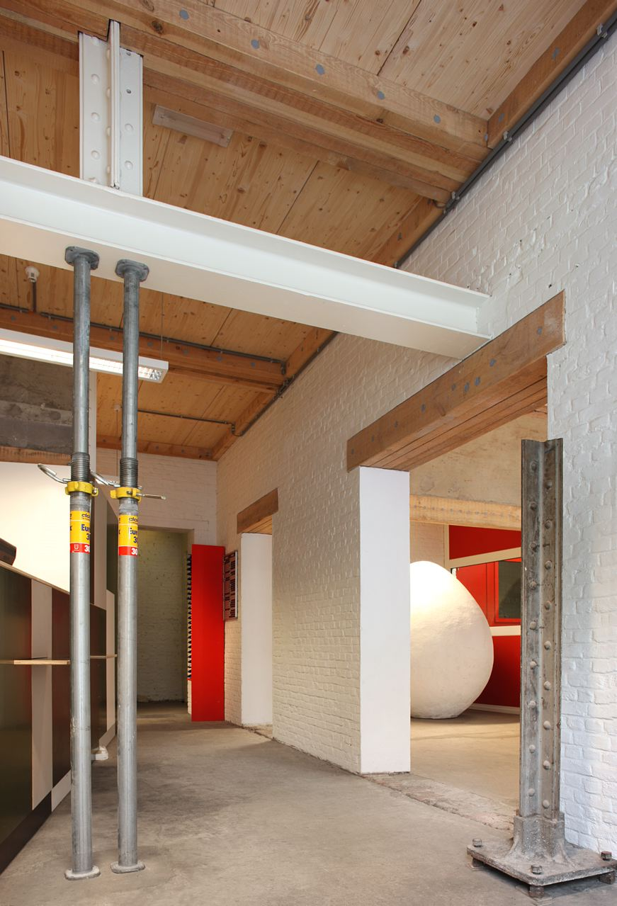
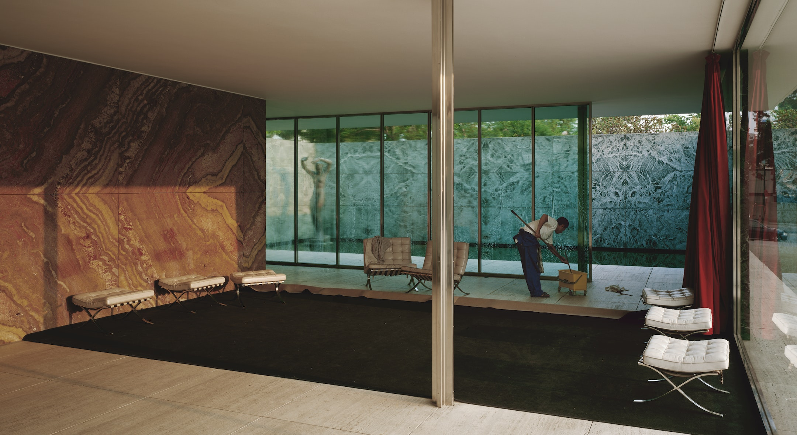

Nigel Van Ha
ARC 550
Research Abstract




Practicing architects have a specific, dual relationship to labor within the processes of a single architectural project: on one hand they labor to produce designs for clients, on the other hand they call for and describe the conditions of the labor of consultant, construction worker, building maintenance workers, and others within all phases of a building. This research project investigates the relationships in France, England, and the United States between architects’ roles as laborers and their role as those who prescribe the labor of others. By reading the discourses of architects as laborers—the legality of union structures, the economics of architects’ wages and benefits, and the social reality of workers’ rights—against the representations and conditions of labor in construction practices, built forms, and the occupation and maintenance of buildings, this project aims to understand the effect of architects’ rights as laborers on the forms of labor they prescribe and represent through the built environment.